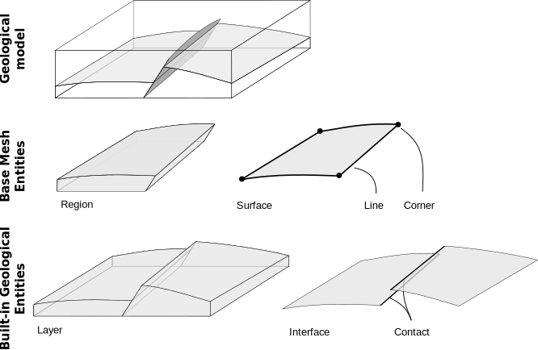

GeoModel: Mutable object composition to represent Geological Model
The key feature of RINGMesh is the RINGMesh::GeoModel. It aims at representing a geological model
with a level of complexity adapted to the prolem to solve. Geological objects are complex and
multiscale.
- The first way to represent and discretize a high level of detail is to use a mesh composition
of Entities called
RINGMesh::GeoModelEntities. In this cas, theRINGMesh::GeoModeldefines the boundary representation of major geological objects holding the discretization and connectivity between Entities. - The second way to deal with the geological model is to consisder the global geometry through a
single mesh. The
RINGMesh::GeoModelhave tha ability to build aRINGMesh::GeoModelMeshon the fly. In this object, every nodes, edges, polygones and cells can be assessed though a global index. It also enable a duplication of nodes along surfaces. This is usefull to feed some physical simulator and export several data structure format.
GeoModel Constitutive Elements: GeoModelEntity
A model is defined by its constitutive elements RINGMesh::GeoModelEntity.
There is two main king of entities:
- Geometrical entities that define the geometry of the model throught several dimensions:
- Regions
- Surfaces
- Lines
- Corners
- Geological entities that group several geometrical entities according to their geological meaning:
- Layers
- Interfaces
- Contacts

We know that this is not an exhautive list. A lot of entities would be valuable to complete the model. We strongly encourage people to contribute and complete these lists :)
GeoModel Geometrical Entities: GeoModelMeshEntity
A set of RINGMesh::GeoModelMeshEntity hold the discretization and the boundary representation of the
geological model. Each mesh entity knows all connected higher and lower dimension mesh entities. Even if
the topology between Entities is known, each RINGMesh::GeoModelMeshEntity store its own mesh data
structure independently from one to another and you can't get any global information. Geometrical
information is contained by an abstract mesh class implemented in RINGMesh. This abstraction level is
a strength of RINGMesh because it can be adapted to any data structure and ease the coupling between
software (more details about meshes).
- A
RINGMesh::Regionis a volume defined by a set ofRingMesh::Surfacecreating a closed "box". Every surfaces that bound a region can be accessed by its index. A region can be meshed with cells. - A
RINGMesh::Surfaceis defined by a set ofRINGMesh::Linecreating a closed curve. It defines one border of aRINGMesh::Region. Neighboring lines and surfaces can be accessed by their indices. - A
RINGMesh::Lineis defined by twoRINGMesh::corner. Connected corner and surfaces can be accessed by their indices. - A
RINGMesh::Corneris a single node that boundRingMesh::Line. Connected lines can be accessed by their indices.
GeoModel Geological Entities: GeoModelGeologicalEntity
A RINGMesh::GeoModelGeologicalEntity store a geological based topological structure. It use a kind
of parent/child implementation where RINGMesh::GeoModelGeologicalEntity is the parent of its children
RINGMesh::GeoModelMeshEntity. The main idea is to cluster several geometrical entity that composed a
geological object.
RINGMesh::Layeris composed by several RINGMesh::Region. A layer is the parent of several children regions. It represents a geological layer.RINGMesh::Interfaceis composed by several RINGMesh::Surface. An interface is tha parent of several children surfaces. It represents a geological objects such as faults or horizons.- A
RINGMesh::Contact(parent) is composed by several RINGMesh::Line (children). It corresponds to the intersections between twoRINGMesh::Interface.
GeoModel Global Representation: GeoModelMesh
The GeoModelMesh is one mesh built by copying and merging all RINGMesh::GeoModelMeshEntity of the GeoModel
in a global and unique mesh. It allows to access to (1) a more general information than the one stores inside
mesh of RINGMesh::GeoModelEntity, and (2) a single mesh representing the entire geological model.
To ease the global access to vertices, edges, facets and cells without redundancy at GeoModel geometrical entity borders; four databases are available. These databases are empty by default and are automatically filled as soon as they are used.
- The
RINGMesh::GeoModelMeshVertices - The
RINGMesh::GeoModelMeshEdgesthis particular database is usfull to represent wells. - The
RINGMesh::GeoModelMeshFacets - The
RINGMesh::GeoModelMeshCellsgives a global access to any cell and its adjacent cells. At the mesh interfaces cells can be either connected or disconnected. Several disconnection mode are available according to geologic feature.- No Duplication
- Duplication along faults only
- Duplication along horizons only
- Duplication along faults and horizons